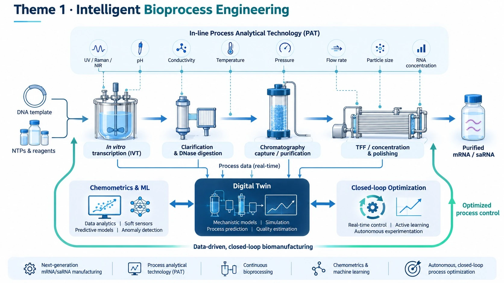
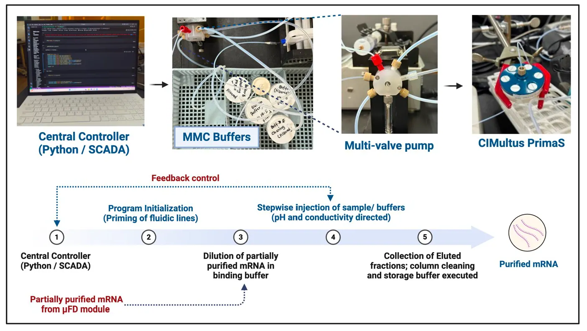
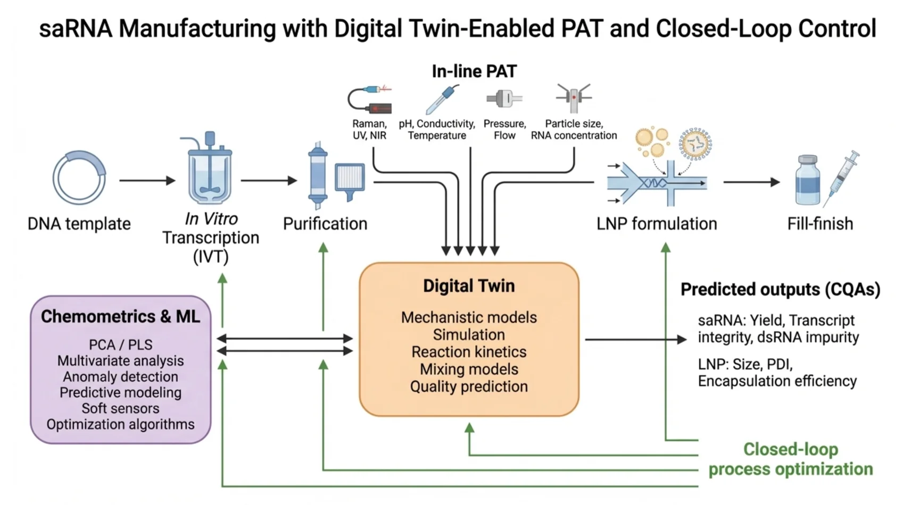

Continuous bioprocessing
Integrating modular upstream and downstream operations for intensified and automated production.
Advancing integrated, continuous, autonomous and sustainable biomanufacturing.

At SIBES, Intelligent Bioprocess Engineering integrates biological systems, process intensification, microfluidics and computational intelligence.
Our goal is to connect upstream and downstream operations—including synthesis, enzymatic processing, filtration, chromatography and concentration—with monitoring and prediction technologies for efficient, reproducible and resource-conscious manufacturing.
Particular research interests include mRNA and saRNA manufacturing and transferable approaches for other biological products. Digital Twins and advanced AI-driven closed-loop manufacturing are emerging directions, not claimed as completed technologies.

This conceptual figure summarizes the SIBES Theme 1 workflow from nucleic acid synthesis and purification to PAT-enabled monitoring, chemometrics, machine learning, Digital Twin modelling and closed-loop process optimization.
The figure is used here as a research-theme overview and represents a conceptual, image-led summary of the theme.
Integrating modular upstream and downstream operations for intensified and automated production.

Microscale reactors, oscillatory flows, mixing, mass transfer and integrated separation.

In vitro transcription, DNA removal, capture, concentration and future saRNA-related process development.

Exploring in-line and at-line measurements of process variables and quality attributes.
Multivariate modelling, soft sensors, anomaly detection, quality prediction and optimization.

Mechanistic and data-driven simulation, state estimation, scenario testing and model-informed control.